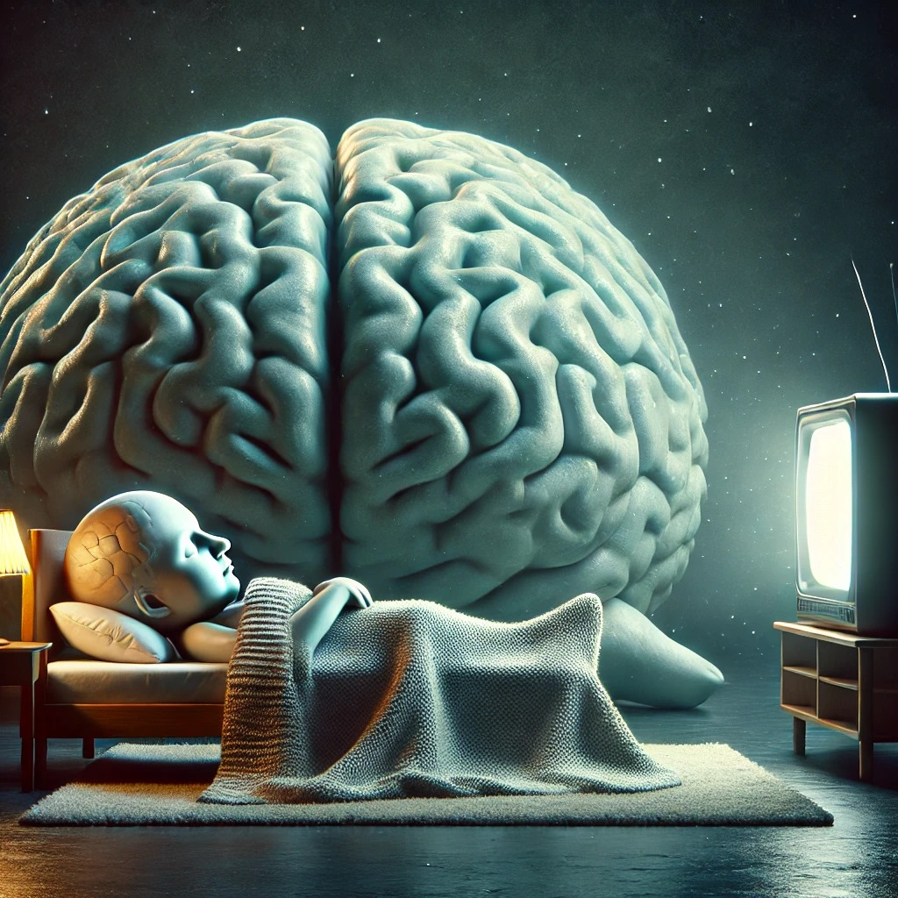

The brain is more active during sleep than it is while watching TV.
It may seem surprising, but the human brain is actually more active during sleep than when watching TV or engaging in passive activities. While watching television, the brain is in a relatively low-energy state, primarily processing visual and auditory stimuli with minimal critical thinking or problem-solving. However, during sleep, the brain undergoes complex and essential processes that are crucial for memory consolidation, emotional regulation, and overall cognitive function.
Sleep is not a passive state; it is an active and dynamic process consisting of different stages, primarily divided into:
1. Non-Rapid Eye Movement (NREM) Sleep
- This stage includes slow-wave sleep (deep sleep), where the brain clears out toxins, repairs tissues, and strengthens neural connections.
- The brain organizes and stores information from the day, reinforcing learning and problem-solving abilities.
2. Rapid Eye Movement (REM) Sleep
- The brain is highly active in this stage, similar to wakefulness.
- Dreams occur as the brain processes emotions, experiences, and unconscious thoughts.
- This stage plays a vital role in creativity, emotional balance, and memory integration.
Research using electroencephalography (EEG) has shown that neural activity during REM sleep is even higher than during wakefulness, as the brain reorganizes and strengthens its neural connections. When watching television, especially passive content, the brain is primarily engaged in low-level processing of images and sounds. Unlike activities like reading, problem-solving, or conversation, TV does not stimulate deep thinking or analytical skills. Excessive screen time before bed can even disrupt sleep patterns, interfering with the brain’s natural processing functions. Thus, while TV can be entertaining, quality sleep is far more beneficial for brain function, creativity, and mental well-being.